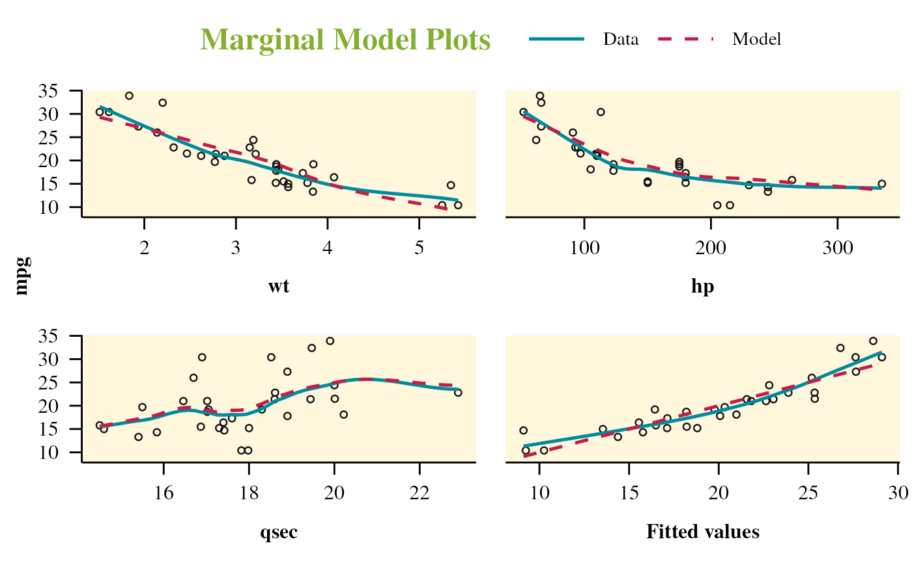
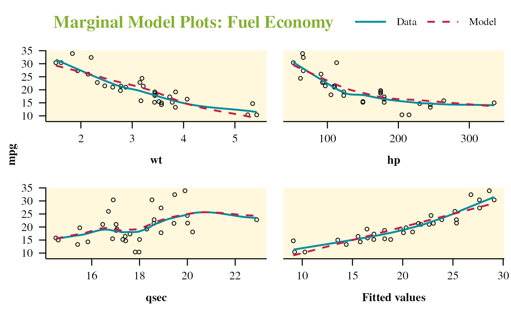

Draws marginal model plots for a linear model, the same plots as
car::mmps(model), as a single faceted ggplot2 plot styled with
snazzieR.theme(). Only ggplot2 is required; car is
not needed.
Value
A ggplot object. Its title is drawn as the legend title,
so the Data/Model key sits to the right of it.
Details
For each eligible term in the model, and for the fitted values, the response is plotted against that variable together with two smooths:
- Data
(solid) a loess smooth of the response on the variable;
- Model
(dashed) a loess smooth of the model's fitted values on the variable.
If the model is adequate the two smooths should agree. The smooths match
those drawn by car: loess with
span = 2/3, degree = 1, family = "symmetric" and four
robustness iterations, evaluated at 50 equally spaced points.
As in car::mmps(), factors and interaction terms are skipped, and
matrix terms such as poly() or spline bases are replaced by their
fitted linear combination (predict(model, type = "terms")). The
panel layout follows car's defaults (e.g. 3 x 3 for 7 to 9 panels).
Examples
model <- lm(mpg ~ wt + hp + qsec, data = mtcars)
marginal.model.plots(model)

# Label which model the plots belong to
marginal.model.plots(model, title = "Marginal Model Plots: Fuel Economy")
